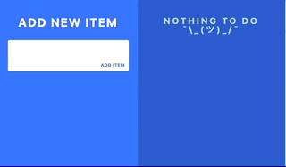

Hasta ahora en una web hemos usado spans, divs, ps... y otras etiquetas para implementarla. ¿Te imaginas que exista la posibilidad de que cada uno de esos componentes tenga un comportamento y visual bien definido y diferenciado? Esto permitiría reutilizar dichos componentes a través de toda la web, de toda la organización o de una comunidad de desarrollo. Es ahí donde entran los Web Components.
Mediante Web Components puedes crear etiquetas html con el comportamiento, visual e interacción que te interese y reutilizarlo donde sea necesario. Algunos ejemplos podrían ser:
<tab-bar tab1="Resumen" tab2="Listado"></tab-bar>
<side-menu item1="Ver mi perfil" item2="Ajustes" item3="salir"></side-menu>
El mismo nombre del tag html ya me dice para qué sirve ese elemento html
LitElement es una librería que nos ayuda a crear Web Components de forma rápida y sencilla.
Quienes ya conozcan Polymer 1 y 2 sabrán que para usar un componente había que incluirlo mediante un import html convencional. Básicamente se implementaba el comportamiento en javascript, se pintaba la interfaz mediante html + css y luego se incluía donde se usara mediante dicho import.
<link rel="import" href="../../bower_components/tab-bar.html">
Además, todos los componentes se distribuían a través de bower.
Con Lit Element se le ha dado un enfoque más Hipster, bower está deprecado, y los componentes se importan cómo módulos ES6.
//index.html
<script type="module">
import "../../bower_components/tab-bar.html";
</script>Además, a través de su uso con Lit Html se puede explotar otras características de ES6 con los tagged templates para renderizar partes de nuestro html y que se rerendericen únicamente aquellas partes que cambian.
En este curso vamos a implementar una app con Web Componentes usando Lit Element.
La aplicación será un gestor de tareas, en el que podrás ir creando una check list para ver qué te queda pendiente por hacer. Al hacer click sobre cualquier check, la tarea aparecerá como realizada. Además aparecerá un aspa desde el que se podrán eliminar tareas.

Para ello será necesario aplicar y entender algunos conceptos fundamentales: Extender de clase base, hooks de un componente, registrar un componente, binding de propiedades, estilado de un componente y propagación de eventos.
Vamos a ir al grano: http://bit.ly/2XFD0MN
Lo primero que vamos a hacer es crear un componente muy básico, que pinte una serie de datos de entrada.
Para este ejercicio crearemos un archivo .js llamado my-profile.js
//my-profile.js
import {html, LitElement} from 'lit-element';
class MyProfile extends LitElement {
render() {
return html`hello profile`;
}
}
customElements.define('my-profile', MyProfile);
Ahora probamos que el componente se crea sin problemas.
Vamos a index.js y añadimos
//index.js
import './src/my-profile.js';
Y usamos el Web component que hemos creado en index.html
<!-- index.html -->
...
<body>
<my-profile></my-profile>
</body>
...Vamos a añadir ahora las propiedades Nombre, Apellidos y Edad, para pintar datos que nos vengan de entrada al Web Component. Además le vamos a dar un estilo al componente para que se pinte de color blanco.
Es necesario añadir la propiedad properties, que simplemente es un json con los nombres de las propiedades como keys. Cada key irá acompañada de su tipo.
//my-profile.js
import {html, LitElement} from 'lit-element';
class MyProfile extends LitElement {
static get properties() {
return {
name: String,
surname: String,
age: Number
};
}
static get styles() {
return css`
span {
color: white;
}`;
}
render() {
return html `
<div><span>Nombre: </span><span>${this.name}</span></div>
<div><span>Apellidos: </span><span>${this.surname}</span></div>
<div><span>Edad: </span><span>${this.age} años</span></div>`;
}
}
customElements.define('my-profile', MyProfile);
Para pintarlo, modificamos el index.html
<!-- index.html -->
...
<body>
<my-profile name="Andrés" surname="Rondán" age="24"></my-profile>
</body>
...Se puede apreciar cómo se informan las propiedades que se exponen en el WebComponent, que son justo las definidas como properties.
Veamos ahora cómo crear una computada. Una computada es una propiedad de la clase, que no del Web Component (no se expone en la interfaz del componente cuando lo pintas). Mientras que en Polymer era necesario indicar las propiedades que se necesitaban observar, en lit no es así, simplemente definiéndola como un get es suficiente.
// my-profile.js
...
get completeName() {
return `${this.name} ${this.surname}`;
}
set completeName(value) {
const parts = value.split(' ');
this.name = value[0];
this.surname = value[1];
}
render() {
return html `
<div><span>Nombre: </span><span>${this.completeName}</span></div>
<div><span>Edad: </span><span>${this.age} años</span></div>`;
}
...Ahora vamos a completar el ejemplo pintando un listado de skills.
//my-profile.js
class MyProfile extends LitElement {
static get properties() {
return {
name: String,
surname: String,
age: Number,
skills: Array
};
}
static get styles() {
return css`
:host {
color: white;
}`;
}
render() {
return html `
<div><span>Nombre: </span><span>${this.completeName}</span></div>
<div><span>Apellidos: </span><span>${this.surname}</span></div>
<div><span>Edad: </span><span>${this.age} años</span></div>
<div>Skills</div>
<ul>
${this.skills.map((skill) =>
html`<li> ${skill} </li>`
)}
</ul>`;
}
}
customElements.define('my-profile', MyProfile);Para capturar los eventos, o bien lo hacemos mediante la forma tradicional (addEventListener) o bien lo podemos hacer con @<nombre-evento>.
Por ejemplo, para capturar el click usaríamos @click. LitElement proporcion dos formas de bindear los eventos:
html`<my-component @click="${this.onClick}"></my-component>`;O bien ejecutar una función
html`<my-component @click="${() => this.onClick(‘foo')}"></my-component>`;Vamos a hacer que al hacer click en una de las skills esta se elimine de el listado. Para ello, modificamos my-profile.js
//my-profile.js
import { html, LitElement, css } from 'lit-element';
class MyProfile extends LitElement {
...
render() {
return html `
<div><span>Nombre: </span><span>${this.name}</span></div>
<div><span>Apellidos: </span><span>${this.surname}</span></div>
<div><span>Edad: </span><span>${this.age} años</span></div>
<div>Skills</div>
<ul>
${this.skills.map((skill) => html`<li @click="${() => this.onClick(skill)}"> ${skill}`)}
</ul>
`;
}
onClick(skill) {
this.skills = this.skills.filter((userSkill) => skill !== userSkill);
}
}
customElements.define('my-profile', MyProfile);
Los lifecycle callbacks son una serie de métodos que se ejecutan durante el ciclo de vida de un LitElement. Estos se pueden sobreescribir para hacer que nuestro componente tenga un determinado comportamiento cuando ocurra algo.
Además, también se pueden sobreescribir otros hooks nativos a los WebComponents, como connectedCallback, disconnectedCalback...
Algunos ejemplos:
performUpdate() {
setTimeout(() => {
super.performUpdate();
}, 5000)
}
shouldUpdate() {
console.log('ojo! se va a actualizar alguna propiedad');
return true;
}
firstUpdated() {
console.log('estoy listo!');
}
update(properties) {
console.log('se han cambiado estas propiedades', properties);
super.update(...arguments);
}
La aplicación está formada por los siguientes Componentes:
Todo-app escucha los eventos add-item (@add-item) del componente add-item y remove-item (@remove-item) del componente todo-item.
Add-item tiene un input, que será el nombre de la tarea y debe emitir el evento addItem con lo introducido en el texto.
List-item pinta todos los ToDos, usando el listado todoList y el componente todo-item. Además, cada elemento tiene un botón para eliminar el propio ToDo.
El porcentaje de completado lo podemos hacer con una computada.
Vamos a add-item.js que es el que tiene la acción de añadir. En él encontraremos un input y un botón con una acción para el evento on-click sin emplementar.
Vamos a mostrar por consola el valor del input al pulsar el botón:
console.log(this.shadowRoot.getElementById('newItem').value);Para insertar esa tarea en el listado de tareas de la app necesitamos notificar al padre del nombre de la tarea. Esto lo haremos mediante el evento add-item, pasándole el texto que ha introducido el usuario. Para ello crearemos un CustomEvent de la siguiente manera.
//add-item.js
import { html, LitElement } from 'lit-element';
import { addItemStyle } from './add-item-style';
class AddItem extends LitElement {
// ...
addItem() {
const onAddItemEvent = new CustomEvent('add-item', {
detail: { task: this.inputElement.value },
bubbles: true,
composed: true
});
this.dispatchEvent(onAddItemEvent);
}
get inputElement() {
return this.shadowRoot.getElementById('newItem');
}
// ...
}
customElements.define('add-item', AddItem);
Ahora tendremos que capturarlo en el padre e insertarlo en el todoList. Vamos a ver qué nos llega en el evento antes de continuar.
//todo-app.js
import { html, LitElement } from 'lit-element';
import './add-item';
import './list-item';
class TodoApp extends LitElement {
static get properties() {
return {};
}
onAddItem(e) {
}
render() {
return html `
<add-item @add-item="${this.onAddItem}"></add-item>
<list-items @remove-item="${this.onRemoveItem}"
.todoList="${this.todoList}">
</list-items>
`;
}
}
customElements.define('todo-app', TodoApp);
Ahora lo insertamos en el todoList
//todo-app.js
import { html, LitElement } from 'lit-element';
import './add-item';
import './list-item';
class TodoApp extends LitElement {
//...
onAddItem(e) {
this.todoList = [...(this.todoList || []), e.detail.task];
console.log(this.todoList);
}
//...
}
customElements.define('todo-app', TodoApp);
Para pintar el listado de tags existe el componente list-item, que recibe como entrada el todoList desde su padre, usando repeat. Repeat es una directiva de lit-html que optimiza el renderizado en el manejo de listas pesadas, ordenaciones, cambios etc.
//list-item.js
render() {
return html `
<div class="lists">
<div class="list">
<div class="list-wrapper">
${repeat(this.todoList || [], (todoItem)=>todoItem.id,(todoItem)=>html`<todo-item .todoItem="${todoItem}"></todo-item>`)}
</div>
</div>
</div>`;
}
Vamos a añadir un ternario para mostrar otro literal cuando no hay items en el listado de ToDos. Para ello, nos vamos a list-item.js e introducimos lo siguiente en el render
//list-item.js
render() {
return html `
<div class="lists">
<div class="list">
<h2 class="title">
${this.todoList ? html`Today's todo list`: html`Nothing to do ¯\\_(ツ)_/¯`}
</h2>
<div class="list-wrapper">
${repeat(this.todoList || [], (todoItem)=>todoItem.id,(todoItem)=>html`<todo-item .todoItem="${todoItem}"></todo-item>`)}
</div>
</div>
</div>`;
}
A su vez, el list-item usa el todo-item para pintar cada ToDo. Si abrimos el todo-item, veremos que cada ToDo tiene 3 atributos: item, id y done, para representar el texto del ToDo, un identificador para poder manejarlo y un estado de si está hecho o no respectivamente.
Tenemos pues que modificar el onAddItem del todo-app.js para insertar en el listado de ToDos los elementos de la forma que hemos definido:
//todo-app.js
onAddItem(e) {
const todo = {
id: btoa(Math.random()),
item: e.detail.task,
done: false
};
this.todoList = [...this.todoList, todo];
console.log(this.todoList);
}
Para inicializar una variable, se setea en el constructor de la clase
//todo-app.js
constructor() {
super();
this.todoList = [];
}